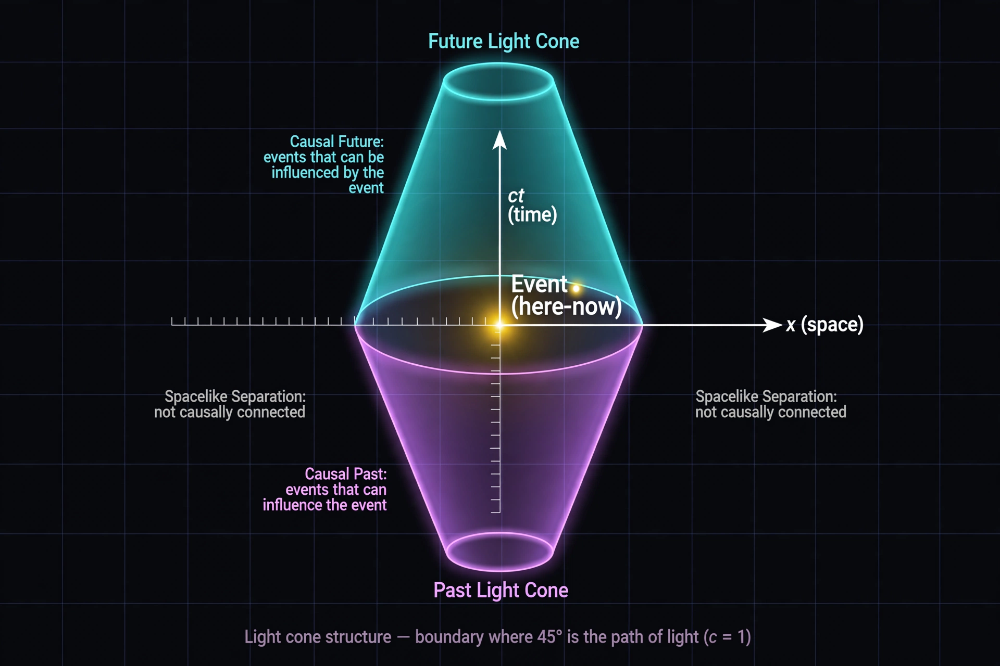

Special relativity

[Diagram: a light cone diagram — past and future cones meeting at a point event in spacetime]Special relativity is a scientific theory of the relationship between space and time. In Albert Einstein's 1905 paper "On the Electrodynamics of Moving Bodies", the theory is presented as being based on two postulates: the laws of physics are invariant in all inertial frames of reference, and the speed of light in vacuum is the same for all observers, regardless of the motion of the light source.
The theory has a wide range of consequences: the relativity of simultaneity, time dilation (moving clocks tick slower), length contraction, a universal speed limit at the speed of light, and the equivalence of mass and energy expressed in the famous equation:
Development
Special relativity resolved tensions between Maxwell's electromagnetism and Newtonian mechanics, and the null result of the Michelson–Morley experiment, which failed to detect motion through a luminiferous ether. Lorentz and Poincaré developed much of the mathematics (Lorentz transformations); Einstein's contribution was the physical interpretation discarding the ether and absolute time. Minkowski recast it as the geometry of four-dimensional spacetime.
Evidence and applications
Time dilation is confirmed daily: muons created in the upper atmosphere reach the ground in numbers only explicable if their internal clocks run slow (or distances contract); atomic clocks flown around the world differ as predicted; and the GPS system must correct for both special and general relativistic effects — engineering documented by agencies including NASA. Particle accelerators such as those at CERN are designed around relativistic dynamics.
Relation to general relativity
Special relativity applies where gravity is negligible. Einstein spent a further decade generalising it to include gravitation, producing general relativity in 1915. Both theories, with quantum mechanics, are pillars of modern physics, even though a unified quantum theory of gravity remains elusive.